Walkthrough: Import Configuration Package
Basic necessary system setup for the use of Basic Localization for Latvia is created, when applying the configuration package LVI.LVI.STANDARD.
- Click on the button Search for Page or Report...
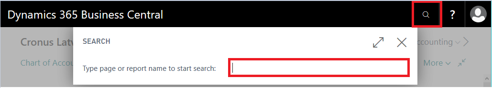
- Type Config. Packages and select Config. Packages from Pages and Tasks
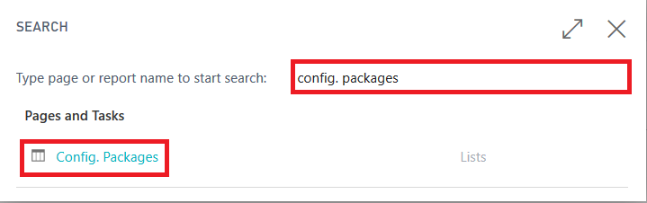
- Select LVI.LVI.Standard package from list of Config. Packages and press Apply Package.
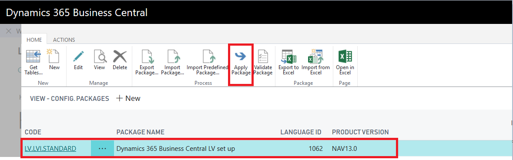
Configuration package ensures the following information:
- Countries/Regions and Country/Region Translations
- Currencies
- Customer, Vendor, Inventory, Bank Account, General Business, General Product, VAT Business, VAT Product Posting Groups
- General and VAT Posting Setup
- Shipment methods
- Source codes
- Post codes for Latvia
- Permissions sets
- Bank Export/Import Setup
- Foreign Payment codes
Walkthrough: Enter Registration number for Customer
About this walkthrough: Registration number is used in preparing bank export files and on document printouts, that are handed out to customers or vendors. This walkthrough demonstrates the process for entering registration numbers for customer in Customer card.
Roles: No specific user roles are required.
Story: You are Katrīna Pavlova, assigned by Cronus International to be a CFO in Cronus Latvia, SIA. The company runs business in the sphere of sales of furniture and rendering consultation services related to interior design upon request of local customers. Cronus Latvia, SIA is required to use customer company registration number on official documents sent to the customer. Your task is to create customer card for new Customer “Nordic Group, SIA” and enter the company registration number.
Prerequisite: No specific prerequisites are required.
Steps:
- Click on the button Search for Page or Report...
- Type Customer and select Customers from Pages and Tasks
- Press New to create a new Customer Card
- Apply template “Vietējie klienti”
- Enter Customer Company Name “Nordic Group, SIA”
- Enter Address “Elizabetes 57”
- Enter Post Code “LV-1039”
- Enter Customer Company Registration number
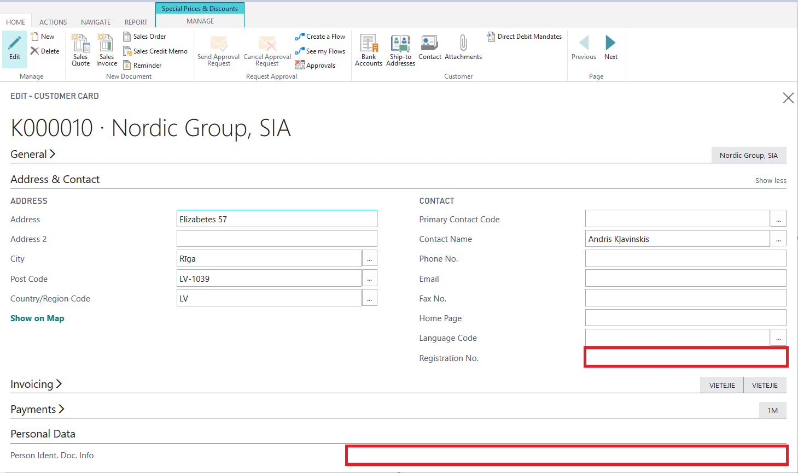
- Customer Card is complete.
Walkthrough: Create Transporter
About this walkthrough: Each company may keep a list of transporters, where it includes vehicle and driver information for its own transport or external service provider transport. This walkthrough demonstrates the process for creating a transporter card.
Roles: No specific user roles are required.
Story: You are Linda Martina, a manager in Cronus Latvia, SIA. The company runs business in the sphere of sales of furniture and rendering consultation services related to interior design upon request of local customers. Cronus Latvia, SIA has signed a contract with local transportation company who would deliver sales orders to customers. Your task is to create new transporter card for “JL Logistics, SIA” mentioning the vehicle and the driver.
Prerequisite: No specific prerequisites are required
Steps:
- Click on the button Search for Page or Report...
- Type Transporter and select Transporters from Pages and Tasks
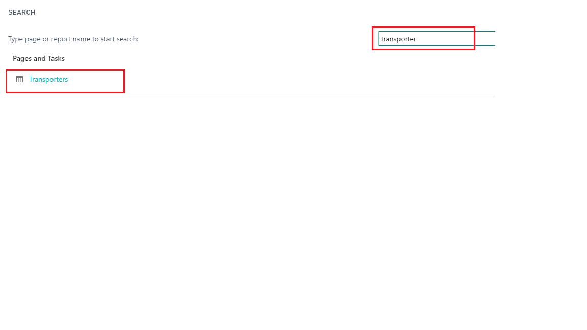
- Press New, in order to create New Transporter card

- Enter Code – JL_VWTRANSP
- Enter Name, Surname – Jānis Liepa for particular Driver
- Enter Vehicle Reg.No.- LP 147
- Enter Company Name- JL Logistics, SIA
- Enter Company Reg. No.- 40003336661 for Corporate Delivery Service providers
- Enter Company address -K.Ulmaņa gatve 160, Rīga as legal address of the Delivery Service provider
- Transporter card is created and may be used in sales, purchase and transfer documents.

Walkthrough: Create payment file for bank
About this walkthrough: This walkthrough demonstrates the process for creating payment files in ISO format that can be uploaded into Banking Online of commercial banks of Latvia.
Roles: No specific user roles are required.
Story: You are Katrīna Pavlova, assigned by Cronus International to be a CFO in Cronus Latvia, SIA. The company runs business in the sphere of sales of furniture and rendering consultation services related to interior design upon request of local customers. Cronus Latvia, SIA is required to create a payment of outstanding vendor invoices. Your task is to create a payment file in ISO (SEPA) format that can be uploaded into your commercial bank online.
Prerequisite: Payment journal batch should have a balancing account mentioned and Allow Payment Export checked.
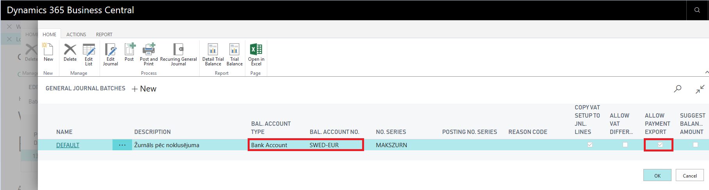
Steps: Create a new payment journal batch for the SWED-EUR.
- Choose the icon, enter payment journals, and then select the related link.
- From the Batch Name field, open the journal batches list.
- On the ribbon, on the Home tab, click New.
- In the Name field, enter DEFAULT.
- In the Bal. Account Type field, select Bank Account.
- In the Bal. Account No. field, select SWED-EUR.
- In the No.series field, select MAKSZURN.
- In the Allow Payment Export field, place a checkmark.
- Click OK.
Run the Suggest Vendor Payments batch job. 10. On the ribbon, on the Home tab, click Suggest Vendor Payments. 11. Enter the following information on the Options FastTab. 12. In the Last Payment Date field, enter 02/28/20. 13. Place a checkmark in the Summarize per Vendor field. 14. In the Posting Date field, enter 02/26/20. 15. Enter the following information on the Vendor FastTab 16. In the Where field, enter No. 17. In the Is field, enter P000010. 18. Clear any other filters on this FastTab. 19. Click OK to run the batch job. 20. Click OK to the message about currencies.
Create the SEPA Payment file. 21. On the ribbon, on the Home tab, click Export….
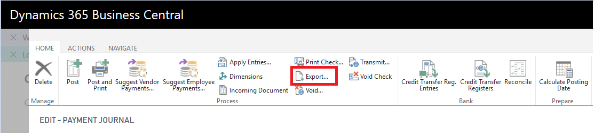
- On the message box, click Open to view the file.
- After viewing the file, return to Business Central.
Post the journal. 24. On the ribbon, on the Home tab, click Post. 25. Click Yes to post the journal lines. 26. Click OK. 27. Close the Payment Journal page.
Walkthrough: Import bank statement transactions
About this walkthrough: This walkthrough demonstrates the process for importing bank statement files in ISO format into Business Central.
Roles: No specific user roles are required.
Story: You are Katrīna Pavlova, assigned by Cronus International to be a CFO in Cronus Latvia, SIA. The company runs business in the sphere of sales of furniture and rendering consultation services related to interior design upon request of local customers. Cronus Latvia, SIA is required to create a payment of outstanding vendor invoices. Your task is import bank transaction file in ISO (SEPA) format. Prerequisite:
Steps:
- Click on the button Search for Page or Report...
- Type Payment Reconciliation Journals and select Payment Reconciliation Journals from Pages and Tasks
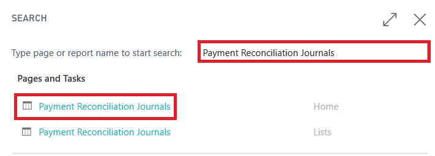
- Press Import Bank Transactions
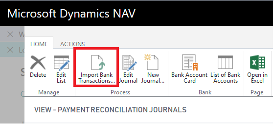
- Press Choose, in order to proceed with selecting the bank statement file for import
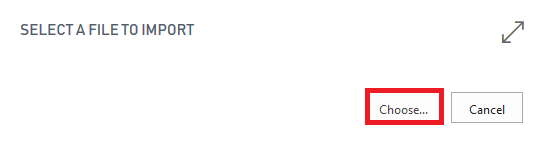
- Proceed with transaction application automatically or manually
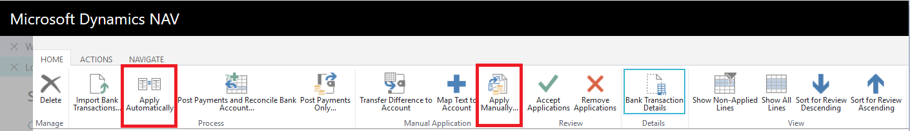
- After all transactions are applied and accepted, proceed with posting payment reconciliation journal by pressing Post Payment Only…
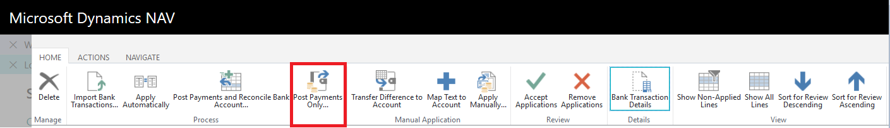
Walkthrough: Assign foreign payment code
About this walkthrough: National Bank of Latvia requires to specify foreign payment code for external incoming payments. When posting external incoming payments, a Foreign Payment Code needs to be assigned to particular transaction. Afterwards a Foreign Payment Report can be created. This walkthrough demonstrates the process for assigning foreign payment code for an incoming payment.
Roles: No specific user roles are required.
Story: You are Katrīna Pavlova, assigned by Cronus International to be a CFO in Cronus Latvia, SIA. The company runs business in the sphere of sales of furniture and rendering consultation services related to interior design upon request of local customers. Cronus Latvia, SIA is required to assign a foreign payment code for incoming external payment.
Prerequisite: List of Foreign Payment codes needs to be completed.
Steps:
- Click on the button Search for Page or Report...
- Type Payment Journals and select Payment Journals from Pages and Tasks

- Create a Payment journal line with an incoming payment from a foreign Customer
- Enter Posting Date 08.08.2019
- Enter Document Type – Payment
- Enter Account Type: Customer
- Enter Account No.: K000030 Alpine Ski House
- Enter Amount: -50 000.00
- Assign Foreign Payment Code: 111
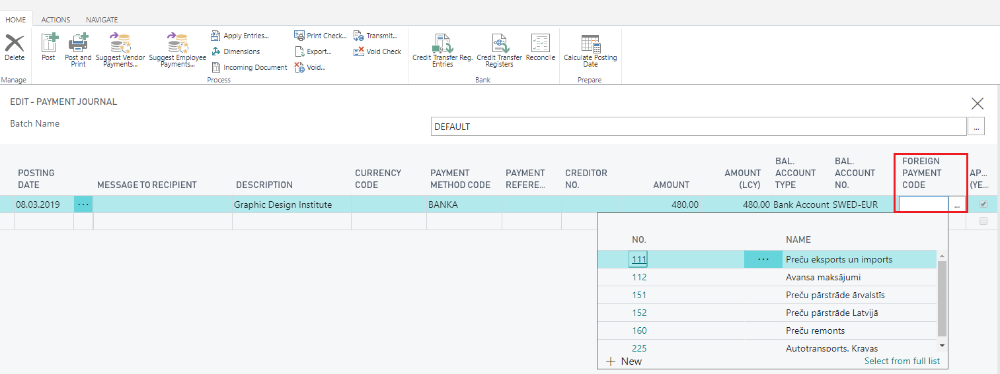
- Post Payment Journal
- Click on the button Search for Page or Report...
- Type Foreign Bank Payments 1-IB and select Foreign Bank Payments 1-IB from Reports and Analysis
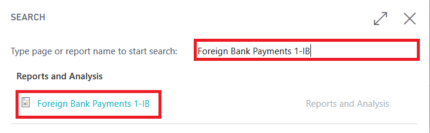
- Set Printing Options Printing Options:
- Year – 2019
- Month – August
- Company Official – Katrīna Pavlova
- Transaction Limit, LCY – 10 000
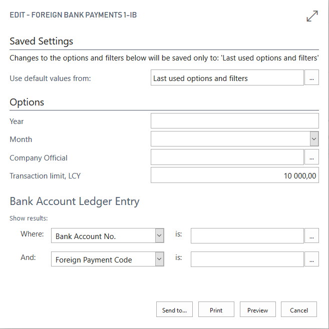
- Press Print, in order to view the Report
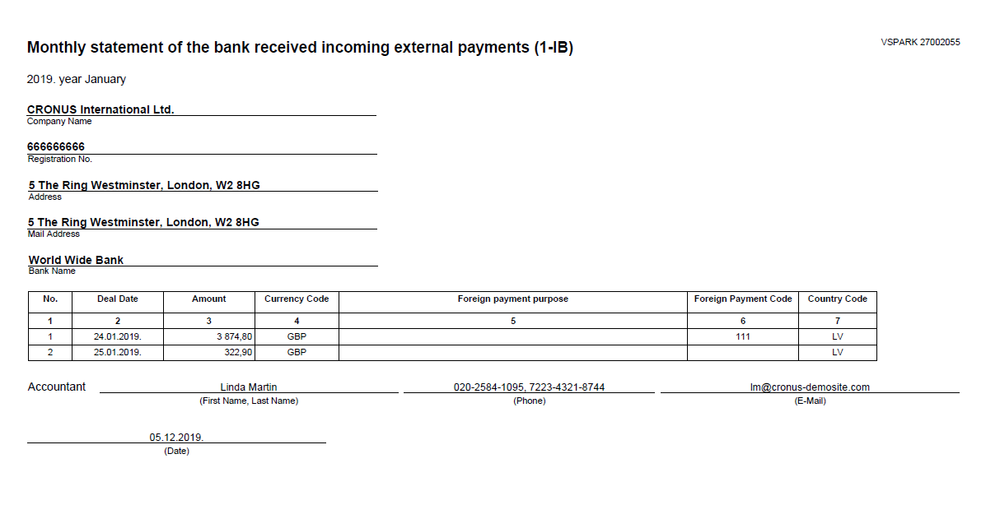
Walkthrough: Import Currency Exchange Rates
About this walkthrough: transactions in foreign currencies are recorded in the system in local currency, based on currency exchange rate. Currency Exchange Rates may be uploaded into system either automatically on a regular basis using a job que entry or manually by user. The source of information is European Central Bank (http://www.ecb.int/stats/exchange/eurofxref/html/index.en.html). This walkthrough demonstrates the process for importing currency exchange rates.
Roles: No specific user roles are required.
Story: You are Katrīna Pavlova, assigned by Cronus International to be a CFO in Cronus Latvia, SIA. The company runs business in the sphere of sales of furniture and rendering consultation services related to interior design upon request of local customers. Cronus Latvia, SIA is required to record sales and purchase transactions in foreign currencies, therefore your task is to import currency exchange rate into Business Central.
Prerequisite: Currency cards need to be completed with currency code and related standard setup. By applying LVI.LVI.Standard configuration package, Currency Exchange Rate Services are created in the system with all required setup and need to be enabled.
Steps: In order to enable the Currency Exchange Rate Service proceed with following steps:
- Click on the button Search for Page or Report...
- Type Currency Exchange Rate Services and select Currency Exchange Rate Services from Pages and Tasks

- Select ECB-EXCHANGE-RATES from Currency Exchange Rate Services and press Enable.

- Click on the button Search for Page or Report...
- Type Currencies and select Currencies from Pages and Tasks
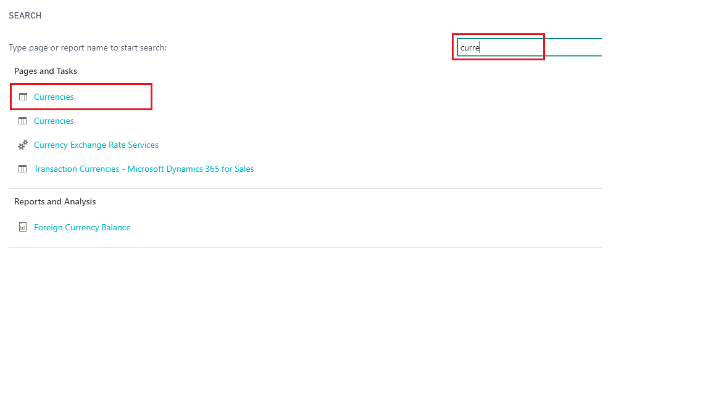
- Press Import Currency Rates
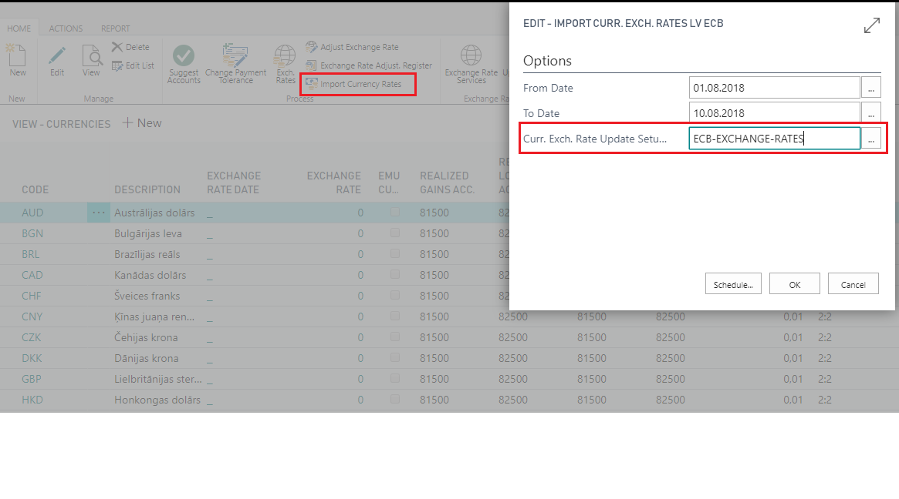
- Set Import Currency Rates options Options:
- From Date – set the period start date for import
- To Date – set the period end date for import (by default is set to today)
- Curr.Exch. Rate Update Setup – select ECB-EXCHANGE-RATES
- Press OK
- Review the list of Currencies, where the Exchange Rate is updated.
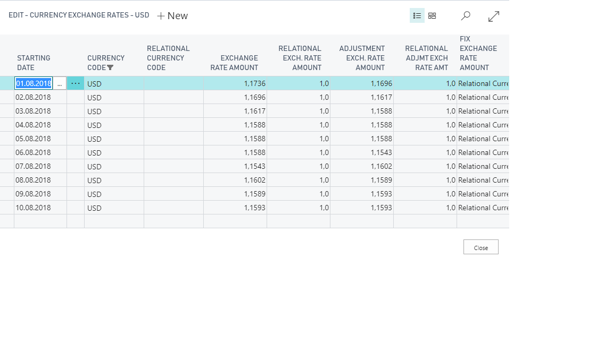
Note: European Central bank publishes currency exchange rates for the day at 15:15 each working day. All foreign currency accounting transactions should be recorded, using currency exchange rate, that is available at the beginning of the current day (published the previous day)- Exchange Rate Amount. If currency exchange rate for current date is available (after 15:15), then the value is displayed in field Adjustment Currency Exchange Rate Amount. Currency reevaluation is done based on Adjustment Currency Exchange Rate Amount at the end of the period. Foreign currency exchange rate amounts are calculated as amount of foreign currency per 1 EUR (1.00 EUR = 1.3317 USD).
Walkthrough: Prepare document printouts
Sales Prepayment Invoice
About this walkthrough: is prepared for customers as a sales prepayment invoice for goods not yet shipped provided as sales source document. The printout has all required data for sales prepayment document. This walkthrough demonstrates the process for printing sales prepayment invoice.
Roles: No specific user roles are required.
Story: You are Katrīna Pavlova, assigned by Cronus International to be a CFO in Cronus Latvia, SIA. The company runs business in the sphere of sales of furniture and rendering consultation services related to interior design upon request of local customers. Cronus Latvia, SIA has agreed on a sales order with 50% prepayment with customer K00010 Nordic Group, SIA, therefore your task is to prepare a sales prepayment invoice.
- Choose the icon, enter sales orders, and click the related link.
- On the ribbon, on the Home tab, click New to create the prepayment sales order.
- Press ENTER to automatically insert a sales order number in the No. field.
- In the Customer field enter K00010 and move to the next field. The sales order header is automatically filled in with the default settings from the customer card.
- In the Document Date, Posting Date and Order Date fields, enter 08/10/2018.
- Expand the Prepayment FastTab.
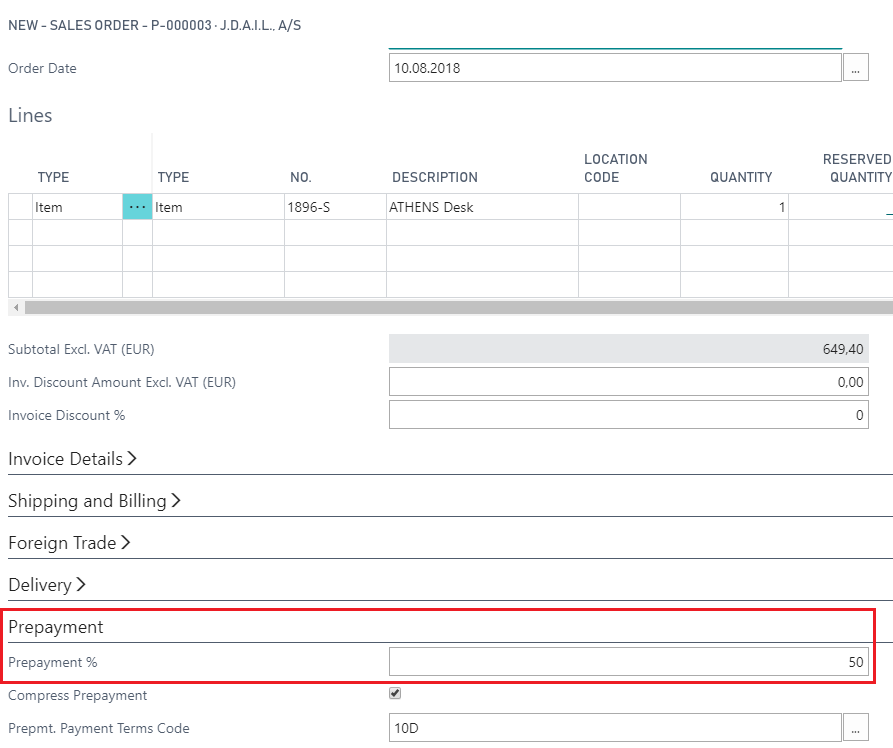
- In the Prepayment % field, enter 50.
- In the Prepmt. Payment Terms Code enter 14 DAYS.
- Move to the Lines FastTab.
- In the first line enter the following information:
- In the Type field, enter Item.
- In the No. field, enter 1896-S.
- In the Quantity field, enter 1.
- In the Unit Price Excl. VAT field, enter 649.40.
- Print Sales Prepayment Invoice- Particular Print button LV Sales Prepayment Invoice is located in the Ribbon under the TAB ACTIONS, in section PRINT.
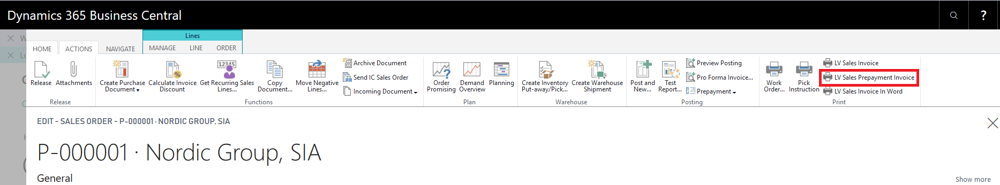
- Set Printing Options
Printing Options: the following printing options are available for this printout:
- Count of Copies – 0
- Print Payer – not marked as checked
- Print Amount in LCY – not marked as checked
- Print Salesperson Name – not marked as checked
- Print VAT Specification – not marked as checked
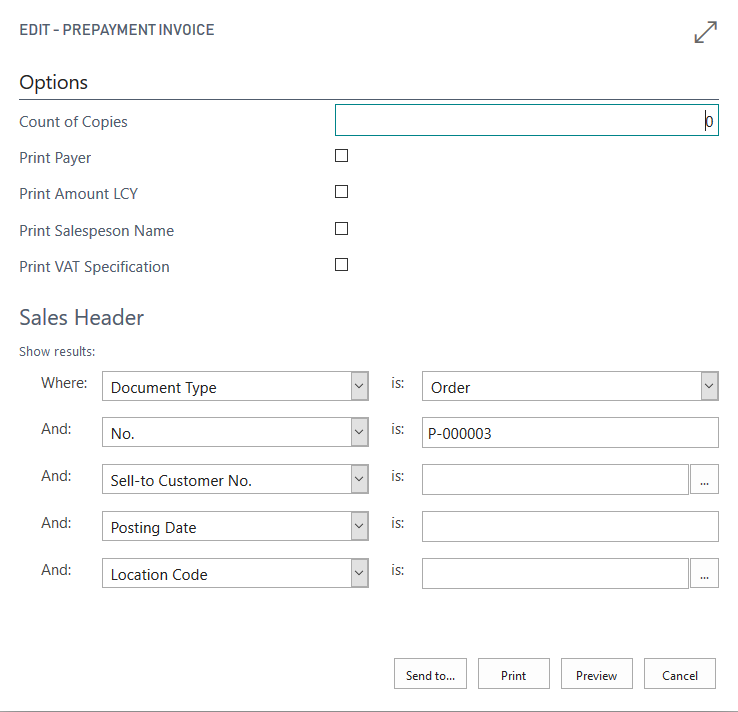
- View Printout
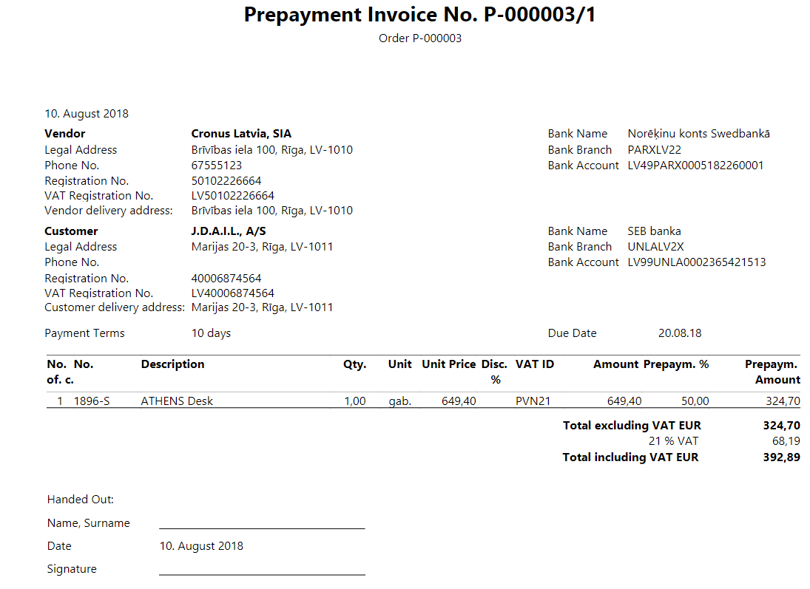
Note: document can be printed from unposted sales documents- Sales Order; printing this document does not create any postings.
Sales Invoice
About this walkthrough: is prepared for customers as a sales invoice for goods shipped as sales source document. The printout has all required data for sales prepayment document. This walkthrough demonstrates the process for printing sales invoice.
Roles: No specific user roles are required.
Story: You are Aleksandrs Kuzņecovs, assigned by Cronus International to be a salesperson in Cronus Latvia, SIA. The company runs business in the sphere of sales of furniture and rendering consultation services related to interior design upon request of local customers. Cronus Latvia, SIA has agreed on a sales order with customer K00010 Nordic Group, SIA, therefore your task is to prepare a sales invoice.
Pre-requisites: not required
Steps:
- Choose the icon, enter sales orders, and click the related link.
- On the ribbon, on the Home tab, click New to create the prepayment sales order.
- Press ENTER to automatically insert a sales order number in the No. field.
- In the Customer field enter K00010 and move to the next field. The sales order header is automatically filled in with the default settings from the customer card.
- In the Document Date, Posting Date and Order Date fields, enter 03/08/2019.
- Enter Sales Person code AK for Aleksandrs Kuzņecovs
- Expand the Prepayment FastTab.
- In the Prepmt. Payment Terms Code enter 14 DAYS.
- Move to the Lines FastTab.
- In the first line enter the following information:
- In the Type field, enter Item.
- In the No. field, enter 1906-S.
- In the Quantity field, enter 1.
- In the Unit Price Excl. VAT field, enter 281.40.
- Move to a new sales order line.
- In the Type field, enter Item.
- In the No. field, enter 1964-S.
- In the Quantity field, enter 4.
- In the Unit Price Excl. VAT field, enter 125.10.
- Print Sales Invoice- Particular Print button LV Sales Invoice is located in the Ribbon under the TAB ACTIONS, in section PRINT.
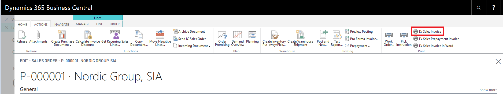
- Set Printing Options
Printing Options: the following printing options are available for this printout:
- Count of Copies – enter 1, that will ensure printing of one original and one document copy
- Service invoice – should not be checked
- Print Payer – should not be checked
- Print Transporter – select Sender for Cronus Latvia to appear as Transporter
- Print Amount in LCY – should not be checked
- Print Salesperson Name – insert a checkmark
- Print VAT Specification – insert a checkmark
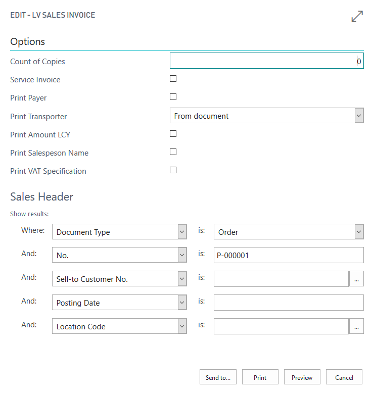
- Press Print
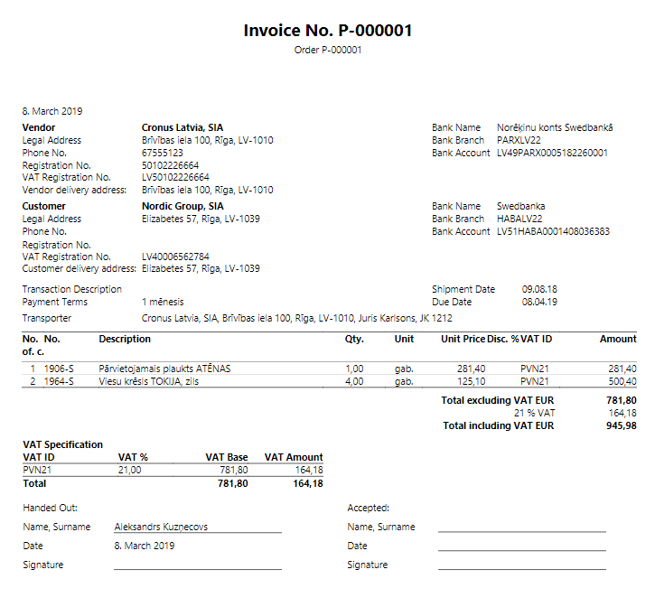
Transfer Invoice
About this walkthrough: Transfer of goods is required to be supported by a delivery note – transfer invoice. The document indicates the quantity and unit costs of goods transferred. This walkthrough demonstrates the process for printing transfer invoice. Transfer of goods is required to be supported by a delivery note – transfer invoice. The document indicates the quantity and unit costs of goods transferred.
Roles: No specific user roles are required.
Story: You are Marks Hansons, assigned by Cronus International to be a warehouse employee in Cronus Latvia, SIA. The company runs business in the sphere of sales of furniture and rendering consultation services related to interior design upon request of local customers. Cronus Latvia, SIA requires to transfer goods from location GALVENA to location DAUGAVPILS, therefore your task is to prepare a transfer invoice.
Pre-requisites: not required
Steps:
- Choose the icon, enter transfer orders, and click the related link.
- On the ribbon, on the Home tab, click New to create the transfer order.
- Press ENTER to automatically insert a sales order number in the No. field.
- In the Transfer From field enter GALVENA, in Transfer to field enter DAUGAVPILS, set In-Transit code as CELA.
- In the Document Date, Posting Date and Order Date fields, enter 01/30/2019.
- Move to the Lines FastTab.
- In the first line enter the following information:
- In the Type field, enter Item.
- In the No. field, enter 1896-S.
- In the Quantity field, enter 2.
- Print Transfer Invoice- Particular Print button LV Transfer Invoice is located in the Ribbon under the TAB ACTIONS, in section GENERAL.
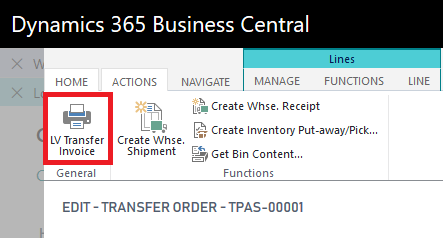
- Set printing options
Printing Options: the following printing options are available for this printout:
- No. of Copies – enter 0
- Print Company as Transporter – leave as unchecked
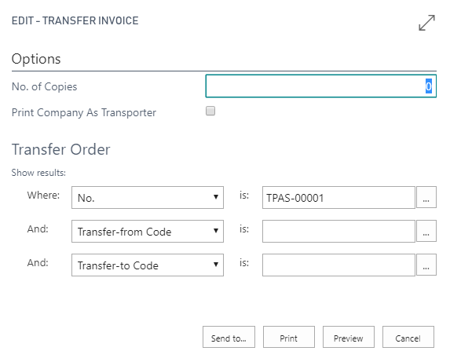
- Press Print
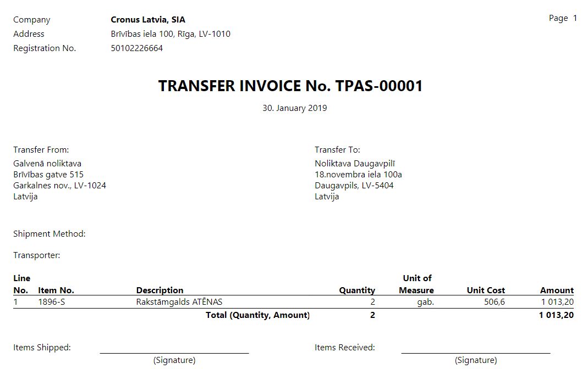
Walkthrough: Post Advance Holder Transactions and Prepare Advance Statement Report
About this walkthrough: Advance holder transactions are the procurements made by the Employee, that are considered as company expenses. When a procurement happens, an advance holder reports to the company about the expenditures that were made. This walkthrough demonstrates the process for recording, controlling and reimbursing employee expenses.
Role: No specific user roles are required.
Story: You are Katrīna Pavlova, assigned by Cronus International to be a CFO in Cronus Latvia, SIA. The company runs business in the sphere of sales of furniture and rendering consultation services related to interior design upon request of local customers. Cronus Latvia, SIA is required to record employee expenses for Kārlis Zariņš and create Advance Statement report.
Pre-requisites: Vendor card for Paul Smith is already created with specific Vendor Posting Group: AVNOR
Steps:
- Choose the icon, enter purchase invoices, and click the related link.
- On the ribbon, on the Home tab, click New.
- Go to the General FastTab.
- In the Vendor Name field, enter Datorapkalpes tehonologs, SIA.
- In the Posting Description, enter “Office and Other Expenses”
- Move to the lines.
- In the Type field, enter G/L account.
- In the No. field, enter 77200.
- In the Quantity field, enter 1.
- In the Direct Unit Cost Excl. VAT field, enter 20.66.
- Go to the Shipping and Payment FastTab.
- In Pay-to select Another Vendor, in next field Name- select Paul Smith
- Click Post.
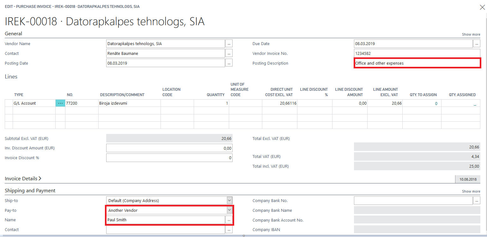
- Click on the button Search for Page or Report...
- Type Advance statement report and select Advance statement report from Reports and Analysis
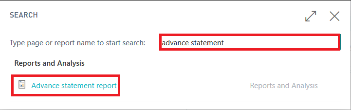
- Set Printing Options Printing Options: the following printing options are available for this printout:
- Advance statement No. – enter 3
- Vendor No. – select P000070
- Date Filter – set date filter for 03/01/2019.. 03/31/2019
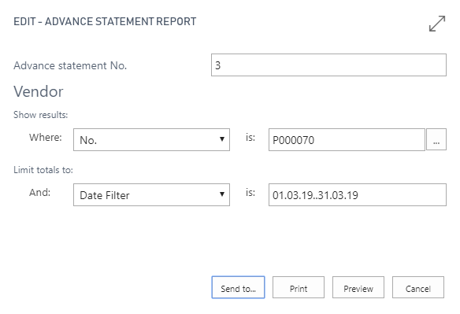
- Press Print and review the printout
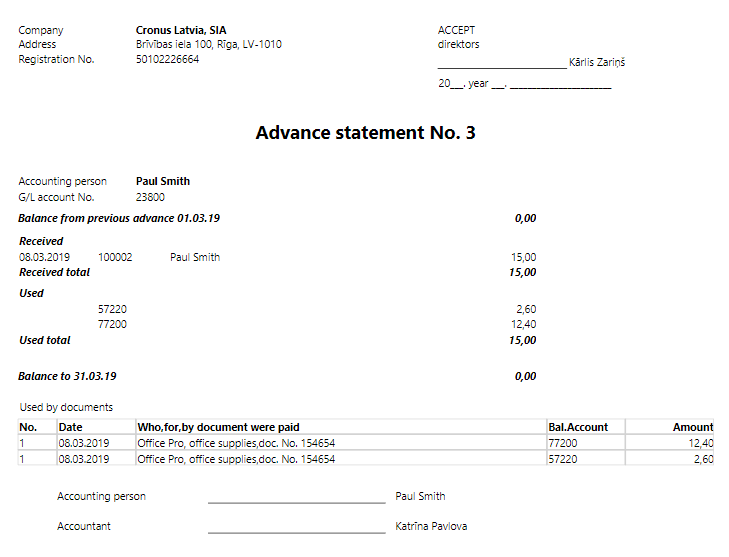
Walkthrough: Inventory
Phys. Inventory Document
About this walkthrough: Company may perform a stock-take on regular basis, in order to control item quantities in system and in nature. This walkthrough demonstrates the process for recording and controlling physical inventory.
Role: no specific role required
Story: You are Katrīna Pavlova, assigned by Cronus International to be a CFO in Cronus Latvia, SIA. The company runs business in the sphere of sales of furniture and rendering consultation services related to interior design upon request of local customers. Cronus Latvia, SIA is required to perform an inventory stock take at 02/29/2019. Your task is to calculate stock for all locations and prepare Physical Inventory Document.
Steps:
- Choose the icon, enter Phys. Inventory Journals, and then choose the related link.
- Choose the Calculate Inventory action.
- In the Calculate Inventory window, specify the conditions to use to create the journal lines, such as whether to include items that have zero recorded inventory.
- Enter document no. INV0001
- Choose the OK button.
- For first journal line Item 1896-S change Qty. (Phys.Inventory) to 11
- Post Journal
- Choose the OK button.
- Enter Phys. Inventory Document in Search for Page or Report…
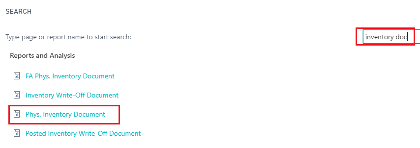
Note: The document can be printed only after the Phys. Inventory Journal lines are posted and Adjust Cost-Item Entries job has been successfully executed. 10. Set Printing Options
Printing Options: the following printing options are available for this printout:
-
- Person.. 5.Person – select employee D0006, D0004, D0003
- Responsible Person- select employee who is financially responsible for keeping the stock accurate – D0007
- Apply Phys. Inventory Ledger Entry Filters set filter to Posting Date 02/28/2019
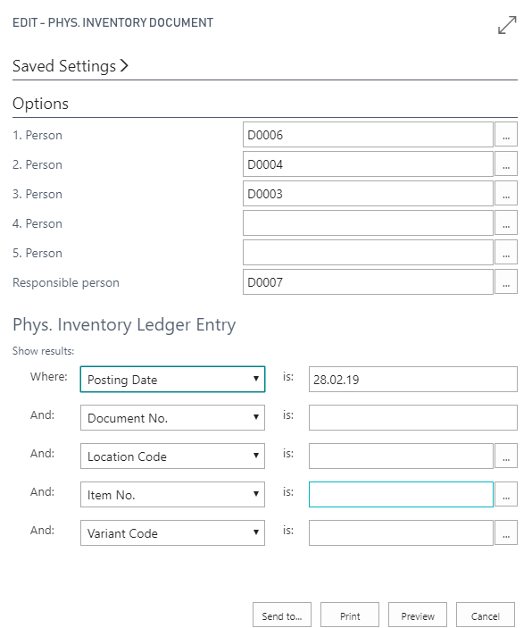
- Press Print
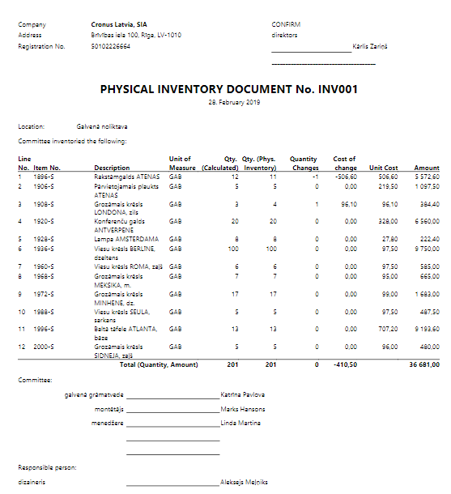
Inventory Write-off Document
About this walkthrough: Company may write off items from stock that are damaged and not suitable for sale. Inventory Write-off document is used for writing-off goods that shall not be sold and recognized as expenses. This walkthrough demonstrates the process for writing off physical inventory.
Role: no specific role required
Story: You are Katrīna Pavlova, assigned by Cronus International to be a CFO in Cronus Latvia, SIA. The company runs business in the sphere of sales of furniture and rendering consultation services related to interior design upon request of local customers. Cronus Latvia, SIA is required to perform an inventory stock take at 02/29/2019. Your task is to calculate stock for all locations and prepare Physical Inventory Document.
Steps:
- Choose the icon, enter Item Journals, and then choose the related link.
- Enter Posting Date- 01/30/2019
- Enter Entry Type- Negative Adjmt.
- Enter Document No.- N0001
- Enter Item No. – 1920-S
- Enter Location - GALVENA
- Enter Quantity- 1
- Choose the Post action to make the inventory adjustments.
- Press OK to close the journal
- Choose the icon, enter Posted Inventory Write-Off Document

- Set Printing Options Printing Options:
- Reason – type ‘Damaged Goods’
-
- Person.. 5.Person – select employees from List of Employees D0003, D0004, D0006
- Set Filter Item Ledger Entry
o Posting Date: 01/30/2019
o Document No. : N0001

- Press Print
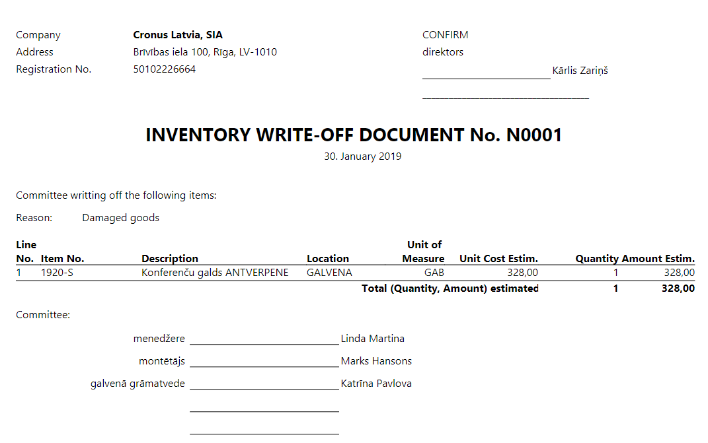